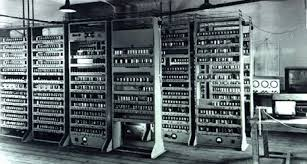

1945

Publication du "First Draft of a Report on the EDVAC", document fondateur de l'architecture von Neumann
Ce document historique de 101 pages établit les bases de l'informatique moderne et introduit le concept de programme enregistré.